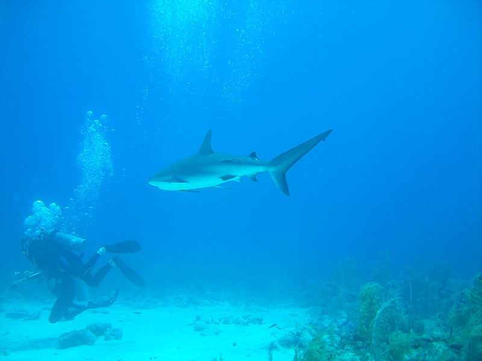
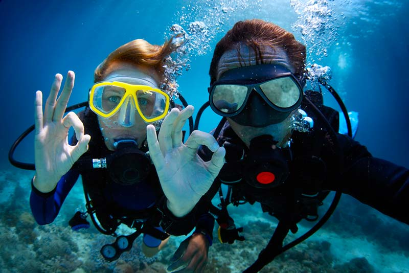

Que es el buceo?

En la actualidad, el buceo se ha convertido en una actividad muy extendida. Aunque tiene diferentes fines (deportivo, de investigación…) el recreativo es uno de los principales, pues lo que se busca es llegar a lo más profundo del mar y descubrir sus maravillas con la seguridad debida. De ahí que sea uno de los deportes practicados en verano por excelencia.
Para practicar buceo es imprescindible tener una preparación base, ya que se requiere tener un certificado con los conocimientos sobre esta actividad. Toda persona interesada en el buceo deberá realizar unos cursos preparatorios y obtener un certificado, a través de organismos como:
- PADI: Asociación Profesional de Instructores de Buceo.
- CMAS: Confederación Mundial de Actividades Subacuáticas.
- SSI: Escuela Internacional de Buceo.
Historia del buceo
El hombre ha sentido curiosidad por descubrir las maravillas que guarda el fondo del mar, eso ha llevado que desde tiempos inmemoriales tratemos de hacer lo posible para llegar a ese objetivo. Así dio inicio a lo que llamamos el buceo.
En 1837, da inicio la creación de un traje impermeable que deja en seco el cuerpo del buzo (escafandra). Así nació el equipo de buzo clásico, que con algunas modificaciones ha llegado hasta nuestros días. En 1860, el francés, Auguste Denayrouze, y un ingeniero de minas, Benedict Rouquayrol, construyeron un aparato más ligero que la escafandra de buzo, que consistía en un depósito metálico que contenía aire, con un regulador elemental y una manguera. El nombre que le dio fue el aeróforo.
Por otro lado, en 1933 un investigador francés, Le Prier, proporciona al buceador una autonomía real, gracias a la botella con aire a alta presión, y a tener una buena visión, por el empleo de una máscara facial. Sin embargo es en el año 1943 cuando se inventa la escafandra autónoma, cuyo elemento fundamental es un regulador que suministra al buceador aire a presión. Por lo tanto, este sistema daba la oportunidad de bajar a superficies nunca imaginadas por el hombre. Fue así que el buceo ha evolucionado desde entonces.
Beneficios del buceo

El buceo entendido como actividad física presenta una serie de beneficios. Su práctica trabaja diferentes grupos musculares, amplía la capacidad pulmonar y sobre todo mejora las coordinaciones del cuerpo
En la actualidad, cada vez más personas practican el buceo, ya que es una actividad que te compenetra con el medio acuático, además de proporcionarte relajación y tranquilidad. También es una práctica en la cual se suele estar se acompañado, dando seguridad y confianza. A rasgos generales, los beneficios del buceo serían:
- Amplia la capacidad pulmonar.
- Proporciona relajacion y tranquilidad
- Mejora la confianza
- Ayuda a controlar la ansiedad y el estres
- Mejora las habilidades psicomotrices
Requisitos para bucear
Si vas a practicar buceo, tienes que tener en cuenta una serie de requisitos para bucear de manera adecuada.
Como todo deporte, al iniciarse se debe saber en qué situación se encuentra para poder mejorar la condición física. Además no hay que olvidar que en el buceo, se debe tener en cuenta que la fortaleza física y el dominio mental son pilares fundamentales. Al bucear se exige tener una buena condición física y no tener problemas graves de salud; especialmente del corazón, oídos o pulmones, pues son partes que más trabajan con las inmersiones.
En el caso de haber tenido algún problema de salud anteriormente, o de tener ciertas dudas es aconsejable realizar:
- Un chequeo del corazon
- UN chequeo de los pulmones
- Un chequeo de los oidos
- Un chequeo de las vias respiratorias